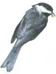

SEEING STARS: Pick a date (below) and take these diagrams outside within an hour of the time indicated. To read: Hold diagram vertically and turn so that the horizon you wish to see (North, South, East, or West) is facing down. The stars located below the horizon edge will now be oriented as they are in the sky. Enjoy the view.(Scott Macneill)